Home / MLF / Week 7 / Real questions
MLF week 7 - real exam questions
14 questions pulled from past papers whose wording matches this week's topics, newest first, duplicates removed. Pick your answers, then press Check answers. Figures and answer keys are the originals.
Elapsed 00:00
Consider the function  Gradient descent is used to minimize
Gradient descent is used to minimize  with learning rate
with learning rate  . Which of the following statements is/are correct?
. Which of the following statements is/are correct?
Gradient descent is used to minimize with learning rate . Which of the following statements is/are correct?- Gradient descent converges for every
 .
. - If , the global minimum is reached in exactly one iteration for every non-zero initial point
 .
.
- If , the global minimum is reached in exactly one iteration for every initial point .

- If , the iterates alternate between and
 for any
for any  .
.
Which of the following options is/are correct 
- Set of all global minima of a convex function forms a convex set.
- Gradient descent algorithm is useful in constrained optimization problem.
- Union of two convex sets will result in a convex set always.
- A function cannot be a convex function if its domain is not a convex set.
Consider a function  whose graph is shown below.
whose graph is shown below.  .
.
whose graph is shown below. 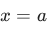
and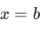
correspond to local minima of .
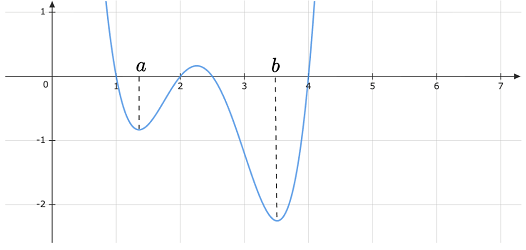
We run two separate instances of gradient descent with the same learning but different initial points. (1) Starting from the point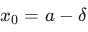
(2) Starting from the point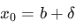
Assume that and are very small positive quantities. Which of the following is/are true if we run gradient descent for a large number of iterations?- Instance (1) will converge to the point
- Instance (2) will converge to the point
- Both instances (1) and (2) will converge to
- Both instances (1) and (2) will converge to
- Instance (1) will not converge to , but will diverge to negative infinity
- Instance (2) will not converge to , but will diverge to infinity
A function
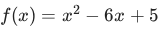
is minimized using the gradient descent algorithm. Let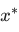
denote the value of at which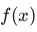
is minimized.Starting from the initial point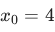
, one iteration of gradient descent is performed with a learning rate of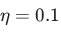
. If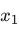
denotes the point obtained after this iteration, find the value of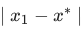
. Enter the answer correct to one decimal place.Comprehension passage for this question
Consider the following constrained optimization problem:
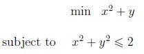
Answer the sub-questions assuming that we take a very small step in the direction of interest.Is
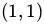
a potential candidate at which the problem could have a local minimum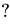
- Yes
- No
Comprehension passage for this question
A company aims to minimize its production cost, represented by the following quadratic function: 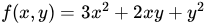
The company applies the gradient descent algorithm to minimize this function, starting with an initial guess of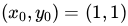
and using a step size (learning rate) of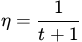
, where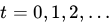
Based on the above data, answer the given subquestions.Find the updated point
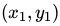
after the first iteration of the gradient descent algorithm.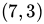
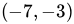
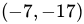
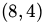
Comprehension passage for this question
A company aims to minimize its production cost, represented by the following quadratic function: The company applies the gradient descent algorithm to minimize this function, starting with an initial guess of and using a step size (learning rate) of
, where Based on the above data, answer the given subquestions.Compute the value of
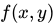
after the second iteration, i.e.,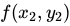
.Which of the following statements about choosing the learning rate in gradient descent is incorrect?
- A small learning rate can lead to slow convergence.
- A large learning rate can cause the loss function to fluctuate around theminimum.
- A large learning rate can cause divergence.
- A small learning rate always causes the training to progress very quickly.
Consider a function f(x,y) = (x − 1)2 + (y − 2)2 . Using a gradient descent algorithm, with an initial guess of (0, 0) and learning rate of 0.1, what will be the absolute difference between the value of the function after first and second iteration? Enter the answer correct to three decimal places.
Consider a function f(x, y) = x2 + y2 − 4x − 2y + 5. Using gradient descent algorithm, with an initial guess of (3, 2) and learning rate of 0.1, what will be the value of (x, y) after one iteration?
- x = 3.2, y = 2.2
- x = 3, y = 2
- x = 1.8,y = 0.8
- x = 2.8, y = 1.8
Which of the following statements regarding gradient descent is/are correct?
- If the step size is chosen as 1, we may “not always” arrive as close to theoptimal solution even after many number of iterations.
- Solution obtained for optimization problem is the local minimum of itsobjective function.
- Solution obtained for optimization problem is the global minimum of itsobjective function.
- Gradient descent converges to the global optimum in the case of convexfunctions.
- Gradient descent does not converge to the global optimum in the case ofconvex functions.
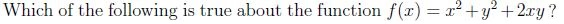
- It is Convex function.
- Its Hessian matrix is indefinite.
- (0, 0) is a local minima of this function.
- (0, 0) is a local maxima of this function.
Let f be a function of three variables. The eigenvalues of Hessian of f are 2, 4, 1. Then what does f
give ?
- Minima.
- Maxima.
- Saddle.
- It can be either maxima or minima.
Which of the following is not true about the function f(x) = x2 + y2 + 2xy ?
- It is Convex function.
- Its Hessian matrix is indefinite.
- (0, 0) is a local minima of this function.
- (0, 0) is a local maxima of this function.